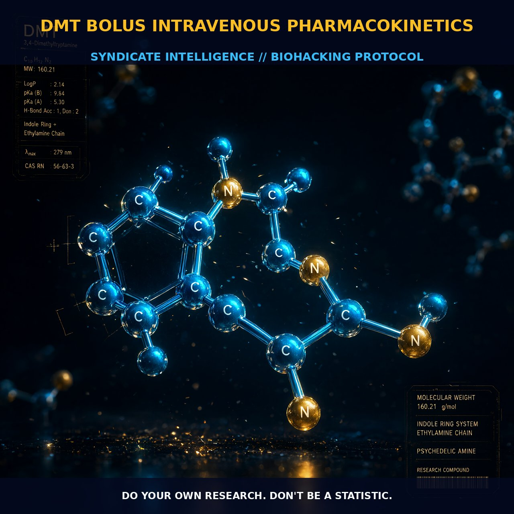

Optimizing DMT Intravenous Pharmacokinetics: Bolus Dynamics and

1. Pharmacokinetic Precision: The Bolus Dynamics
Intravenous DMT administration stands as a precise pharmacological intervention where plasma concentration serves as the primary driver of phenomenological experience. When delivered as a bolus injection over a controlled 30-second window, followed by a saline flush, the onset is nearly instantaneous. Subjective effects manifest within seconds, reaching their peak intensity at approximately two minutes.
The pharmacokinetic profile exhibits a distinct biphasic pattern. This consists of an initial rapid peak generated by the bolus loading dose, followed by a secondary increase corresponding to continuous infusion. Plasma concentrations rise in direct proportion to the dose, establishing a clear correlation between the milligram load and the resulting neurochemical environment within the brain.
2. Elimination and Clearance: The Swift Exit
The elimination phase is critical for understanding the duration of action. Once the infusion terminates or the bolus clears, plasma levels drop exponentially, returning to baseline levels below 1 nM within 90 minutes. This rapid clearance allows for precise control over dosing windows, making IV injection the preferred route for isolating acute effects without the lingering tail associated with oral or intramuscular delivery.
Furthermore, the steep decline in concentration correlates with a swift resolution of subjective effects. Psychoactive impacts subside significantly within 20 minutes post-infusion, leaving little residual footprint. This characteristic ensures that the subject can return to baseline clarity without the grogginess often seen with longer-acting compounds.
3. Biological Leverage: Decoupling Physiology from Psychology
The core biological leverage of IV DMT lies in its serotonergic modulation and the unique decoupling of physiological adaptation from psychological intensity. While heart rate exhibits an acute spike immediately following injection, it typically returns to baseline within 10 minutes, despite subjective effects remaining elevated.
This habituation of the autonomic system indicates a high degree of physiological safety. Prolonged exposure does not overload cardiovascular parameters or induce significant physiological stress. Consequently, the body adapts to the chemical presence while the mind remains immersed in the altered state, allowing for sustained cognitive processing without physical distress.
4. Tolerance and Titration: Sustaining the State
Psychological tolerance emerges more slowly than physiological adaptation, creating a strategic window where effects can be maintained over extended periods through continuous infusion. Research indicates that subjective intensity ratings follow plasma concentrations during the first 20 minutes, but a decoupling occurs thereafter as short-term psychological tolerance develops.
This tolerance is highly manageable. By adjusting the infusion rate to match individual metabolic clearance, users can sustain high-intensity states for hours rather than minutes. The result is a stable neurochemical environment that supports deep immersion without the volatile peaks and troughs associated with bolus-only administration or vaporization.
5. Tactical Implementation: Optimizing the Protocol
For those optimizing DMT protocols, the standard dosing range via continuous IV infusion spans from 6 mg plus 0.6 mg/min up to 18 mg plus 1.9 mg/min. These levels have demonstrated high tolerability in healthy volunteers, maintaining low-to-negligible anxiety ratings even at higher plasma concentrations.
Timing and administration technique are paramount for replicating these results. A standard protocol involves delivering the bolus over 30 seconds, initiating the constant-rate infusion one minute later for a total of 30 minutes of active dosing. This method effectively extends the journey from the order of minutes to hours, allowing subjects to acclimatize to the DMT state without the abrupt exit typical of smoking or vaping.
6. Prostar Life Hack: The Tapered Exit
For maintenance, users can taper the infusion rate gradually to provide a smoother transition out of the peak state. Ensure that the psychological benefits are integrated rather than simply terminated by the drop in plasma concentration. Monitor individual variability closely, as plasma concentration response can vary by up to two-fold between individuals, necessitating personalized titration to find the optimal balance between intensity and clarity.
Prostar Life Hack
Prostar Life Hack: Utilize a gradual tapering of the IV infusion rate during the final 5-10 minutes to smooth the psychological exit. This prevents the 'abrupt snap-back' effect, ensuring that the cognitive benefits of the altered state are integrated rather than terminated by the drop in plasma concentration.
[ AUTHOR: LEAD TECHNICAL RESEARCHER ]
[FRESH ON CHAIN: a410f05a46bc3970... ]